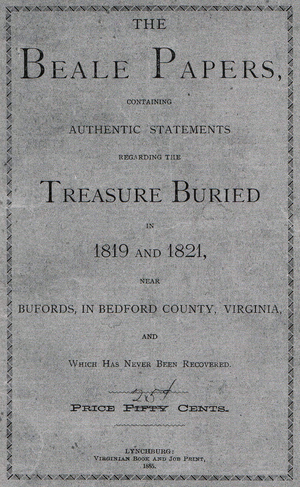

October 06, 2026
The Beale Ciphers — a $60 Million Treasure Hunt Written in Numbers

Cover of The Beale Papers (1885) — public domain
The Beale Ciphers — a $60 Million Treasure Hunt Written in Numbers
Somewhere in Bedford County, Virginia — or so the story goes — there's a vault six feet underground holding gold, silver, and jewels worth more than $60 million in today's money. The only map is a string of 520 numbers that nobody has decoded in 140 years.
The whole story arrives in a single document: an 1885 pamphlet called The Beale Papers, published by a man named James B. Ward. According to the pamphlet, a man named Thomas J. Beale led a party of adventurers west around 1817, struck it rich, and in 1819 and 1821 made two trips back east to bury the fortune near Buford's Tavern in Bedford County. Beale left a locked iron box with a Lynchburg innkeeper named Robert Morriss — containing letters and three coded papers — and vanished.
Three ciphers, one solution
The pamphlet prints three ciphertexts, each a long string of numbers:
- Cipher 1 — supposedly gives the vault's exact location. Unsolved.
- Cipher 2 — supposedly describes the treasure itself. Solved.
- Cipher 3 — supposedly names the treasure's owners and heirs. Unsolved.
Cipher 2 fell to a book cipher: each number points to a word in the Declaration of Independence, and the first letters of those words spell out the message. The decoded text describes the deposits in plain detail — thousands of pounds of gold and silver, jewels worth $13,000, buried six feet deep in an iron-vaulted excavation about four miles from Buford's. Cipher 1, by the pamphlet's own account, holds the location. Cipher 3 holds the names of the rightful owners.
It sounds like a clean setup. The trouble is everything else.
The story has never been proved
Start with the most basic question: did Thomas J. Beale exist? No one has produced convincing evidence he did. The 1885 pamphlet is the only source — written more than sixty years after the events it describes. Cryptographer Jim Gillogly argued in 1980 ("A Dissenting Opinion") that the whole thing reads like a hoax, and researcher Joe Nickell followed in 1982 with a historical and linguistic case that the documents couldn't have been written when the story claims — some of the vocabulary in the decoded text belongs to a later era.
Then there's the suspicious convenience. Of the three ciphers, the only one anyone could decode is the one describing how much treasure there is — the perfect bait for an 1880s pamphlet sold to treasure hunters. The two ciphers that would actually lead somewhere stay locked. And in nearly 140 years of trying — including a declassified collection of Beale studies held by the NSA, computer-era statistical analyses, and generations of diggers across Bedford County — no accepted solution for cipher 1 or 3 has ever emerged, and no treasure has been authenticated.
Defenders point out that the pamphlet's story is internally consistent in places, and that nobody has definitively proved it a fabrication either. But "not disproved" is not the same as true, and the evidentiary gap is wide: there is no early-19th-century record of Beale, the party, the mine, or the burial.
Why we love it anyway
Here's our honest take. The Beale ciphers sit at the exact boundary where mystery becomes interesting: two strings of numbers, publicly printed since 1885, that anyone can download and try to crack, attached to a fortune that may or may not exist. That's a puzzle you can hold in your hands — and it costs nothing to attempt, which is why thousands of people have.
But notice what the solved cipher teaches us. A decoded message is not proof of the world the message describes. Cipher 2 tells us, in Beale's supposed words, what's in the vault — and that's true whether the vault is real or the pamphlet is fiction. The numbers solve. The story doesn't.
So here's the open question, and it's a good one: after 140 years, with modern cryptography and every archive at our fingertips, ciphers 1 and 3 remain silent. Is the silence because the key is lost — or because there was never a treasure at all?
The public trail begins with the 1885 pamphlet, and for now, that's where it ends. Everything before it is story. Everything after it is digging.
Read more: Wikipedia's overview of the Beale ciphers and a recent, careful explainer on the ciphers' history (updated September 2026) that walks through what can actually be checked.
Source: Wikipedia and Tianna Howard Adventures — read the original report
← Back to latest stories